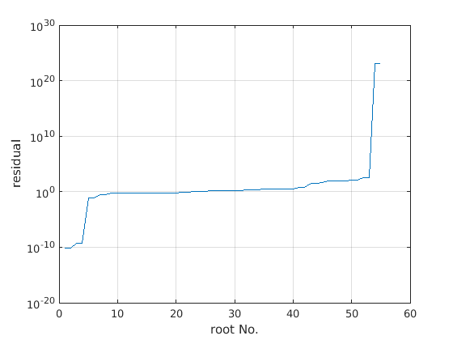

Contents
Dispersion relation for Landau Damping
Author: Jakob Ameres jakobameres.com
Use MATLABs symbolic toolbox, and define frequency , wave vector
syms omega k x % Set up grid of wave vectors the dispersion relation should be solved for % kgrid=0.01:0.005:0.6; kgrid=0.05:0.05:0.6;
Plasma dispersion function Z(x)
The plasma dispersion function can be found in many textbooks
Z=symfun( sqrt(sym(pi))*exp(-x^2)*(1j-erfi(x)),x);
Dispersion relation
The dispersion relation for the Vlasov-Poisson system with an initial state Maxwellian (set )
with thermal velocity  , mean velocity
, mean velocity  and plasma frequency is given as
and plasma frequency is given as
.
Set parameters
vth=1; % Thermal velocity of electrons omegap=1; % Plasma frequency alpha=1; % Normalization v0=0; % Mean velocity % Dispersion relation in symbolic variables D=symfun(1+ alpha*(omegap/vth/k)^2*(1+ (omega/k-v0)/vth/sqrt(2)*... Z((omega/k-v0)/vth/sqrt(2))), ... [omega,k]);
Problem Parameters
Use MATLABS internal variable precision arithmetic to evaluate the Dispersion relation on the contour of a circle in the complex plane with radius radius. For all $ k \in$ kgrid we search for with radius.
radius=3; % n=256; % Number of unit roots, increase for precision
Roots of unity in symbolic expression zk=vpa(exp(1j*2*sym('pi')*(0:n-1)/n));
zk=exp(sym('1j*2*pi')*(0:n-1)/n); % Number of zeroes to retrieve K<<n K=5; K=min(K,n/2-1); %allowed maximum % intK=(diff(D,omega)/D/(sym('2*pi*1j'))); % mean(double(intK(zk,kgrid(4)))) % Define double precision evaluations for vectorization residual=matlabFunction(abs(D),'Vars',[omega,k]); %Structure containing found roots in loose order roots=struct('omega',[],'k',[],'residual',[]); num_roots=0; for idx=1:length(kgrid)
% Print status fprintf('k= %08.4f, %05.2f%%\n',... kgrid(idx), (idx-1)/length(kgrid)*100); % Alternative: use the ratdisk_K method %gk=double(vpa(1./D(zk*radius,kgrid(idx)))); %[r,a,b,mu,nu,w] = ratdisk(gk, n-1-K, K);
k= 000.0500, 00.00%
k= 000.1000, 08.33%
k= 000.1500, 16.67%
k= 000.2000, 25.00%
k= 000.2500, 33.33%
k= 000.3000, 41.67%
k= 000.3500, 50.00%
k= 000.4000, 58.33%
k= 000.4500, 66.67%
k= 000.5000, 75.00%
k= 000.5500, 83.33%
k= 000.6000, 91.67%
Compute Zeroes and Poles by Cauchy Integrals
Algorithm [Cz2] taken from
NUMERICAL ALGORITHMS BASED ON ANALYTIC FUNCTION VALUES AT ROOTS OF UNITY, ANTHONY P. AUSTIN , PETER KRAVANJA , AND LLOYD N. TREFETHEN, SIAM J. NUMER. ANAL. Vol. 52, No. 4, pp. 1795–1821,
s = ifft(double(1./D( zk*radius, kgrid(idx) )));
H = hankel(s(2:K+1), s(K+1:2*K));
H2 = hankel(s(3:K+2), s(K+2:2*K+1));
w = eig(H2,H);
w=w*radius;
Evaluate residual
res=residual(w,kgrid(idx));
% Delete invalid zeroes
valid=(abs(w)<radius & ~isinf(res) & ~isnan(res));
res=res(valid);
w=w(valid);
% Sort by residual
[res,I]=sort(abs(res));
w=w(I);
% append new roots
roots=[roots, struct('omega',w.',...
'k',ones(1,length(w))*kgrid(idx) ,...
'residual',res.')];
end % Rearrange structure and sort by residual roots=struct('omega',[roots.omega],'k',[roots.k],... 'residual',[roots.residual]); [~,I]=sort(roots.residual); roots.omega=roots.omega(I); roots.residual=roots.residual(I); roots.k=roots.k(I);
Discussion
figure; plot(real(roots.omega), imag(roots.omega),'*'); hold on; plot(radius*cos(linspace(0,2*pi)),radius*sin(linspace(0,2*pi)),'k-'); title('roots '); xlabel('real'); ylabel('imaginary'); axis equal; grid on; figure; semilogy(roots.residual); ylabel('residual'); xlabel('root No.'); grid on; tol=1; valid=roots.residual<tol; fprintf('Found %d roots \n', sum(valid)); figure; plot( roots.k(valid) ,real(roots.omega(valid)),'*'); grid on; xlabel('k'); ylabel('frequency'); title('zeros of dispersion relation') figure; plot(roots.k(valid) ,-imag(roots.omega(valid)),'*'); grid on; xlabel('k'); ylabel('damping rate'); title('zeros of dispersion relation') drawnow;
Found 24 roots
Standard test case
Found the following zeros for the dispersion relation for the standard test case
disp(roots.omega(roots.k==0.5))
Columns 1 through 4 1.3784 - 0.2396i -1.3784 - 0.2396i -0.0000 + 1.4198i 2.0864 - 1.6023i Column 5 -2.0864 - 1.6023i
VPA Newton-Raphson refinement
Set the number of significant decimal digits for variable-precision arithmetic
digits(64); maxit=20; % Maximum number of iterations k=vpa(roots.k); w=vpa(roots.omega); newton_step=simplify(D/diff(D,omega)); for it=1:maxit tic; w=w-vpa(newton_step(w,k)); toc; end roots_vpa=struct('k',k,'omega',w,'residual', vpa(abs(D(w,k)))); % Select a tolerance valid=roots_vpa.residual<1e-7; figure; plot( roots_vpa.k(valid) , ... real(roots_vpa.omega(valid)),'*'); grid on; xlabel('k'); ylabel('frequency'); title('zeros of dispersion relation') figure; plot(roots_vpa.k(valid) ,... -imag(roots_vpa.omega(valid)),'*'); grid on; xlabel('k'); ylabel('damping rate'); title('zeros of dispersion relation') drawnow;
Elapsed time is 0.239501 seconds. Elapsed time is 0.277778 seconds. Elapsed time is 0.270950 seconds. Elapsed time is 0.146284 seconds. Elapsed time is 0.264128 seconds. Elapsed time is 0.211193 seconds. Elapsed time is 0.204703 seconds. Elapsed time is 0.264431 seconds. Elapsed time is 0.141881 seconds. Elapsed time is 0.264735 seconds. Elapsed time is 0.202876 seconds. Elapsed time is 0.144182 seconds. Elapsed time is 0.267936 seconds. Elapsed time is 0.203255 seconds. Elapsed time is 0.140247 seconds. Elapsed time is 0.269328 seconds. Elapsed time is 0.208451 seconds. Elapsed time is 0.130255 seconds. Elapsed time is 0.260191 seconds. Elapsed time is 0.190081 seconds.